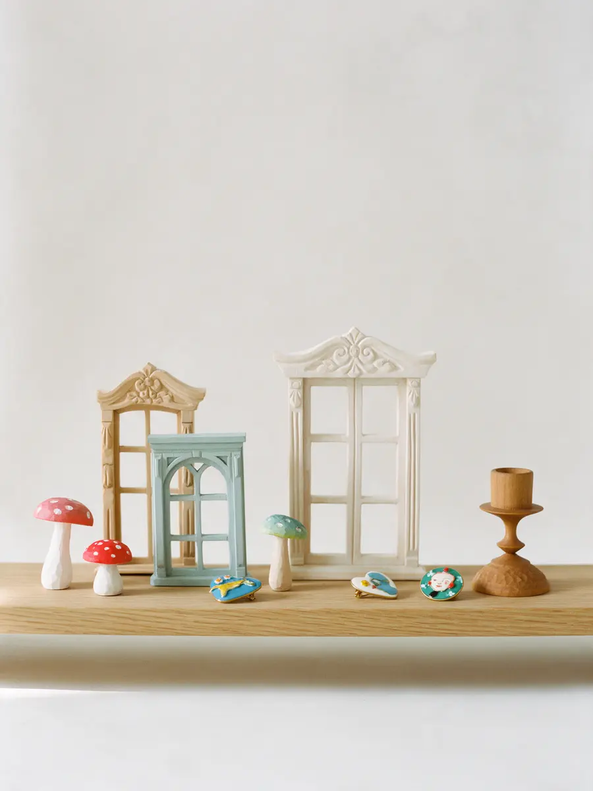
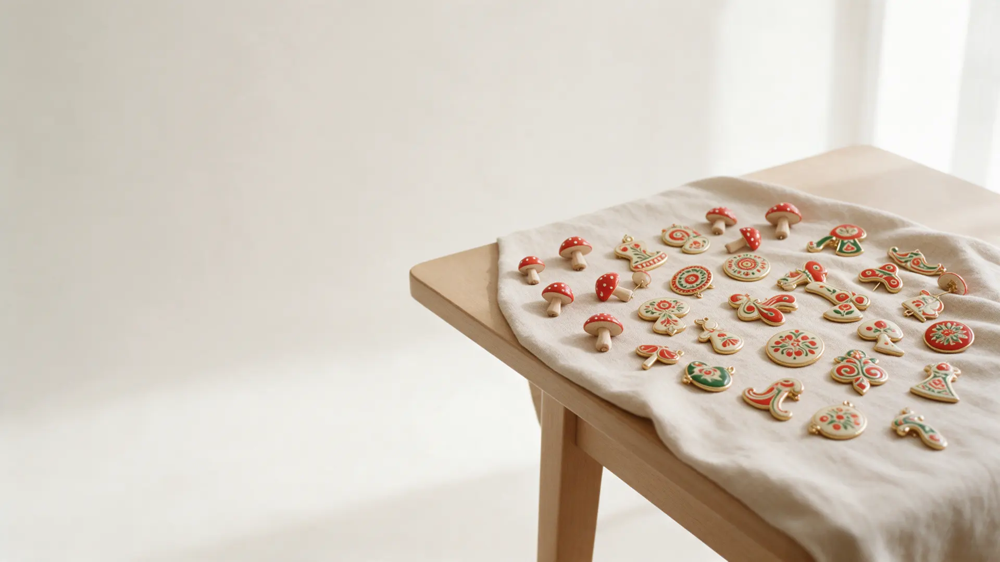
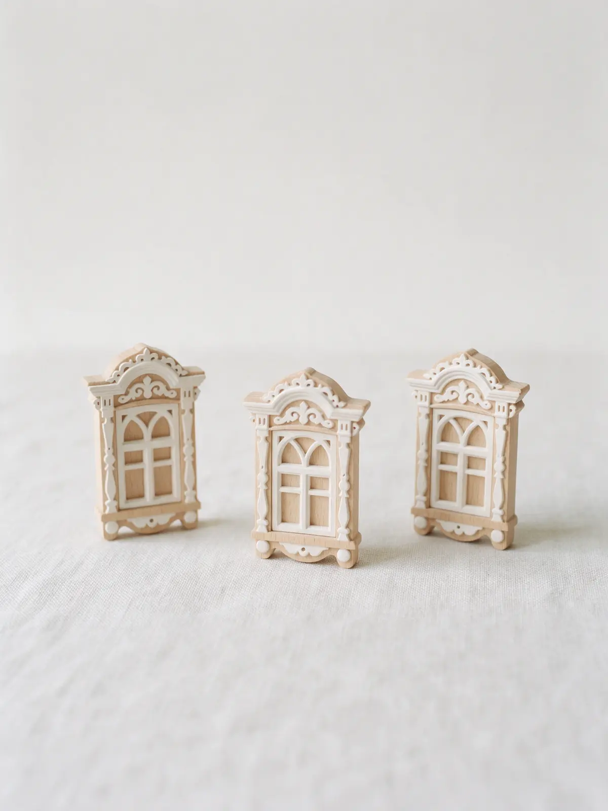

Рязань · сувениры и броши ручной работы
Рязанские броши и сувениры ручной работы
Броши «Рязанка в кичке», магниты-наличники, куклы и подарки из дерева. Соборная улица, 23, каждый день с 10 до 20.
- Товары ручной работы
- Шкатулки для украшений
- Подарочная упаковка

Что в лавке
Входит
- Броши и украшения ручной работы
- Шкатулки для часов и украшений
- Подарки из дерева и поздравительные открытки
- Подарочная упаковка
Отдельно, если нужно
- Доставка – уточняйте у магазина
- Самовывоз возможен
Цены из витрины
Часть позиций с карточки магазина на Яндекс.Картах. Остальной выбор – в лавке.
Броши и украшения
- Брошь «Рязанка в кичке» большая4 500 ₽
- Брошь «Рязанка в кичке» маленькая1 250 ₽
- Грибочки броши500 ₽
Сувениры
- Магнит-наличник500 ₽
- Брелок мухоморчик600 ₽
- Подсвечник Скопинский2 100 ₽
- Куклы Рязаночки3 800 ₽
Цены с карточки на Яндекс.Картах, актуальные уточняйте в магазине.
Как выбрать подарок
- 01
Расскажите о поводе
Для кого сувенир и сколько хотите потратить.
- 02
Покажем выбор
Броши, магниты, куклы, керамика, пряники.
- 03
Расскажем историю
У многих вещей есть история – о наличниках и мастерах продавцы рассказывают.
- 04
Упаковываем
Подарочная упаковка на месте.


Что вы получаете
Сувениры без конвейера
Вещи ручной работы и рязанская символика.
Консультация продавца
Расскажут про вещи и про город.
Подарочная упаковка
Можно взять подарок сразу в упаковке.
Выбор на разный бюджет
От магнита за 250 ₽ до авторской куклы.
Отзывы с Яндекс.Карт
«Огромный выбор местных сувениров, в том числе и ручной работы.»
Sergey Larionov · 16 мая
«Обратите внимание на магниты с наличниками - это копии наличников настоящих, у каждого своя история.»
Natalya D. · 3 августа 2024
«Наверное самый лучший магазин сувениров в Рязани.»
Андрей Вышеславцев · 2 марта 2024
Отзывы с карточки на Яндекс.Картах, без правок.
Частые вопросы
Что можно привезти из Рязани?
Броши «Рязанка в кичке», магниты-наличники, кукол Рязаночек, пряники и керамику.
Есть ли подарочная упаковка?
Да, подарочную упаковку можно взять на месте.
Где вы находитесь?
Рязань, Соборная улица, 23. Работаем ежедневно с 10:00 до 20:00.
Позвоните – расскажем, что есть в наличии
- Адрес
- Соборная улица, 23, Рязань
- Часы
- ежедневно 10:00–20:00
- Телефон
- +7 (910) 501-95-38